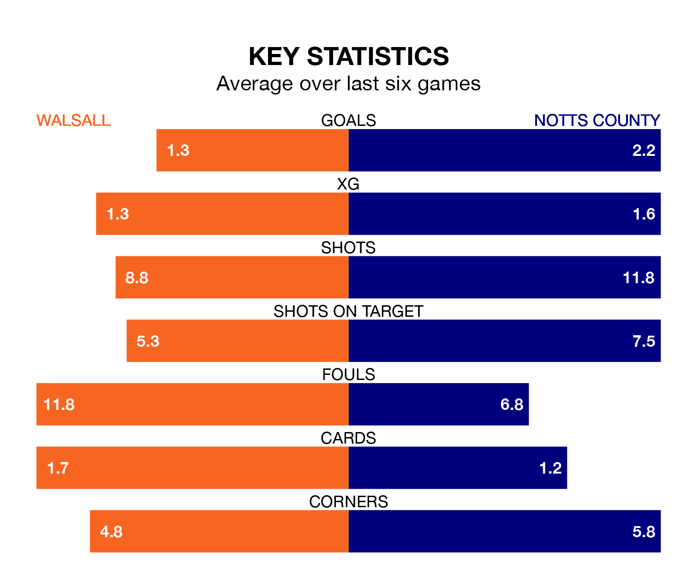

Notts County travel to Walsall on Saturday in EFL League Two.
The visitors come into the game on the back of a win in their last match, having beaten Harrogate Town 3-0 at home, with goals from Jim O'Brien, Jodi Jones and Macaulay Langstaff.
The Saddlers, meanwhile, lost their last match, 2-1 against Doncaster Rovers, with their goal scored by Isaac Hutchinson.
With 83 goals in 42 games so far this season, County are the league's second-highest scorers with 2.0 goals per game. But they are conceding more than average too, letting in 79 goals at a rate of 1.9 per game.
Walsall, meanwhile, are average scorers, with 1.5 goals per game. They have also conceded 1.5 goals per game.
In Langstaff, the visitors have the league's sharpest shooter so far this season. He has notched 25 goals in 42 appearances.
His goal rate of one every 148 minutes is much quicker than that of Hutchinson, the Saddlers's top scorer with a goal every 322 minutes, and a total of 11 goals in 42 games.
The home side are ninth in the table after 42 games, of which they have won 17 and drawn 11, earning 62 points.
County are six places behind Walsall in 15th, with 16 wins and seven draws putting them on 55 points.
Walsall are in mixed form in EFL League Two, with two wins and two draws from their last six games.
And also with two wins and two draws over that period, County's form is identical – they have both taken eight points from 18.
Updated: 10:01 (UTC), 12/04/24